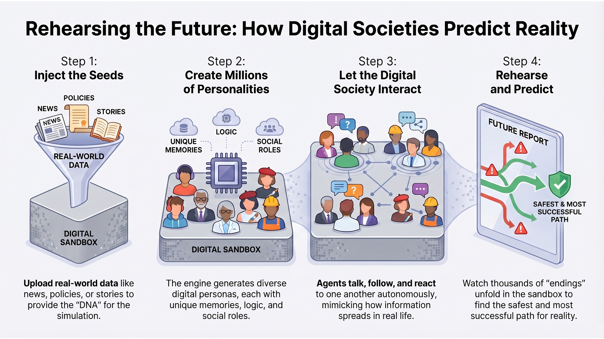

Men’s Private Brand Pairing Outlook | Market Intelligence Simulation

Consumer Personas: Self-Purchasing Male, Style-Conscious Youth, Holiday Gift Buyer (Spouse/Family), Cold/Warm Climate Shoppers.
Expert Personas: Target Merchant Lead, Visual Merchandising Specialist, Sourcing/Costing Analyst, Climate Planner.
This simulation is a merchant-facing directional tool for pairing decisions around a fixed hero bottom.
Outputs reflect scenario logic, persona conflict, and commercial assumptions. They are for planning, not guaranteed forecasting.
Multi-persona debate was run across November 2026, December 2026, and January 2027 to test launch, gifting, and reset conditions.
Scenario Focus: Which top is the better hot-door pairing for Lightweight Check Pattern Poplin Pants: a Light Mini Waffle Henley or a Garment Washed Slub Jersey Henley?
| Time Horizon | Forecasted Market Impact | Logic & Persona Evidence (Sources) |
|---|---|---|
| Short-Term (November 2026) |
• Launch Winner: Waffle henley wins on shelf impact, warmth cue, and seasonal relevance. • Attach Strength: Better “hot door” read with the lightweight plaid poplin pant. |
• Merchant / VM View: Waffle looks more giftable, premium, and launch-ready. • Climate / Retail View: Highest upside in cold doors, with stronger early conversion and faster initial sell-through. |
| Mid-Term (December 2026) |
• Holiday Winner: Waffle stays ahead in gifting and promotional presentation. • Perceived Value: Texture and placket create a more elevated gift read than slub jersey. |
• Gift Buyer Persona: Chooses waffle for stronger unwrap moment and holiday presentation. • Retail Analyst: Seasonal urgency and premium appearance justify hero placement in gifting doors. |
| Long-Term (January 2027) |
• Reset Winner: Slub jersey becomes stronger on comfort, continuity, and practical wear. • Margin Protection: Lower return risk and steadier post-holiday sell-through support profitability. |
• Self-Purchase Persona: Slub jersey feels softer, easier, and more wearable after the holidays. • Commercial View: Waffle becomes more season-specific, while slub jersey supports repeat wear and cleaner inventory flow. |
| Decision Path | Evidence & Thresholds for Action |
|---|---|
| Path A: Lead with Waffle |
|
| Path B: Shift to Slub |
|